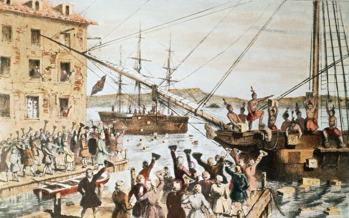

미국 혁명이란 18세기 후반 영국령 북아메리카 13개 식민지가 본국의 지배에서 분리, 독립한 정치적 변혁을 말합니다. 이 혁명으로 결국 미국은 통합을 결의하고, 삼권 분립에 바탕을 둔 연방 헌법을 제정하여 연방 정부를 수립하게 됩니다. 그 결과 자유주의, 민주주의에 기초한 공화국이 수립되었다는 결과를 가집니다.
17세기 많은 영국인들이 종교의 자유와 경제적 풍요를 찾아 북아메리카로
이주하였습니다. 그 결과 북아메리카 식민지가
건설되었습니다. 식민지에는 독자적 의회가 설치되어 폭 넓은 자치가 이루어졌습니다.
그러나 영국은 재정이 악화되자,
식민지에 중상주의 정책을 강화하여 인지세를 부과하고, 관세를 부과하였습니다. 식민지인들은 '대표 없는 곳에
과세 없다'고 주장하며 저항하였습니다. 이에 영국은 차세를 제외한 다른 세금은
폐지하였지만 저항은 수그러들지 않았습니다.
이러한 가운데 영국 정부가 동인도회사에 차를 독점적으로 판매하도록 하는
특권을 주자, 식민지인들이 반발하여 보스턴 차 사건을 일으키고, 영국에서는
식민지를 압박합니다.

보스턴 차 사건▲
식민지 대표들의 제 1차 대륙회의 개최 → 렉싱턴 근교 무력 충돌 → 제 2차 대륙회의 (조지워싱턴 총사령관, 독립선언문 발표) → 식민지군 요크타운 전투 승리 →파리조약 통해 독립 인정